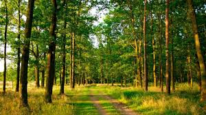

Post 4
Maples and oaks are examples of hardwood trees. Hardwoods have wide leaves and grow fruits. They are often deciduous, meaning they drop their leaves every fall. However, some hardwoods, such as mahogany trees, keep their leaves all year. Hardwood forests grow in places with temperate (mild) or tropical (hot) weather.

Pines and redwoods are examples of softwood trees. Softwoods have cones and needles rather than fruits and wide leaves. Softwoods do not lose their needles each year. Many softwoods are known as evergreens because their needles remain green year-round. Softwood forests often grow near mountains and in cool regions.